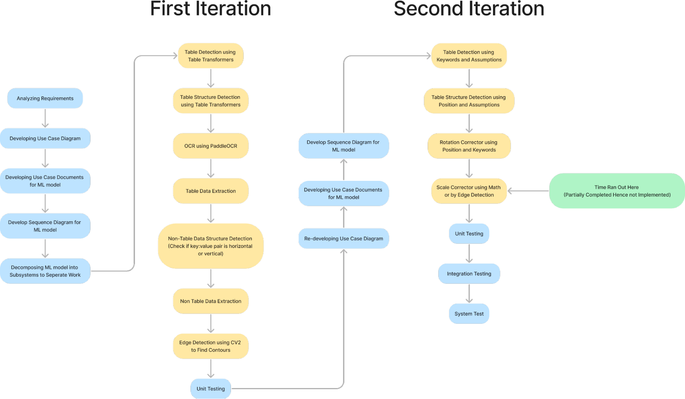
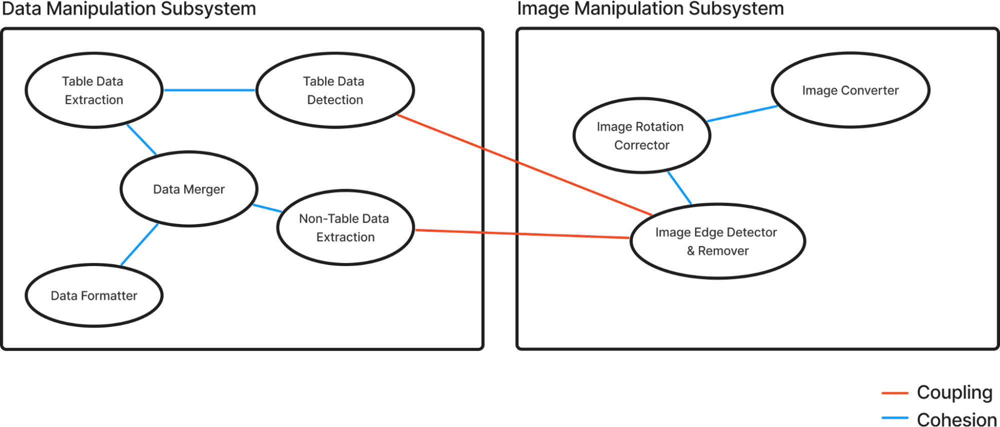
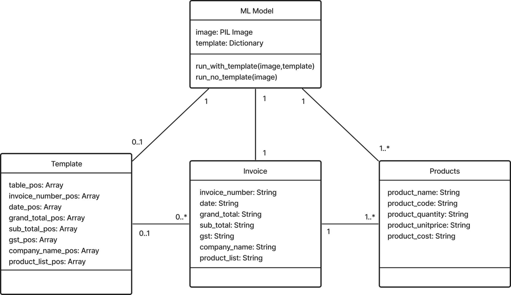
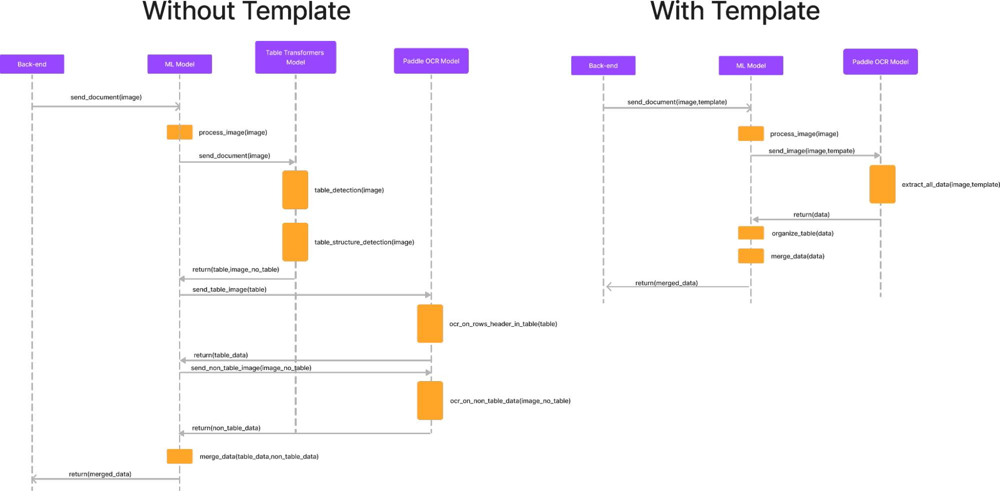
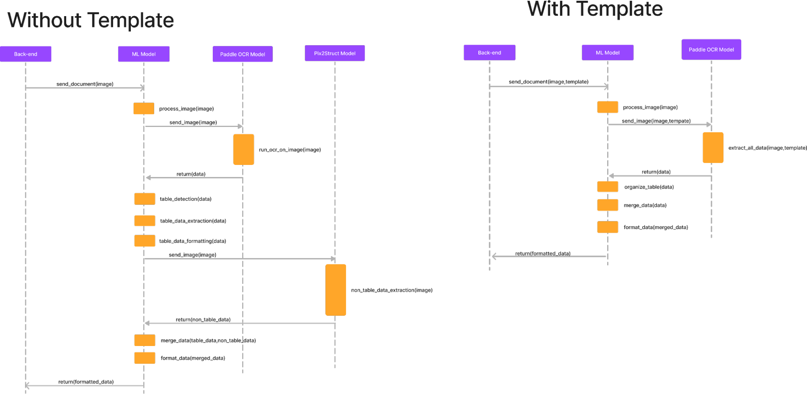

Physical Invoice Data Extraction
Tags: Machine Learning Models, Optical Character Recognition, Python,
Concurrency, Unit Testing
For my Elements of Software Construction module in term 5, my team
was tasked to create a web application for the extraction and storing
of physical invoice data for a client, and eventually searching for
the data for retailers. For this project, I was tasked to develop the
physical data extraction Machine Learning (ML) model. Due to security
reasons, the manipulation of the data was done locally. The code was
written in Python as it provides a wide variety of libraries and
frameworks for machine learning, and there is no need to recompile the
source code, hence changes can be implemented and the results can be
quickly obtained. In this project, I used the iterative and
incremental approach, where I analyzed the requirements, started
designing the software architecture, produced my first iteration,
tested it, re-design the software architecture, produced my second
iteration, and tested it again. Unfortunately due to time constraints
I was only able to reach 1.5 iterations.

The main bulk of my software was split into 2 subsystems: image
manipulation and data manipulation. The image manipulation subsystem's
purpose was to correct the rotations, scaling issues, and distortions
in the image before the data was extracted. The data manipulation
subsystem's purpose was to extract the data (includes table data and
other unorganized data) and format it such that it could be used by
other parts of the web application.



In the first iteration, I used multiple models to extract information
out of the image. Firstly, edge detection using CV2 was applied to
search for the contours in the image to remove the background and
correct the image rotation. Then, using Table Transformer's table
detection model, the location of the table was found. The image was
then cropped to obtain the table and the image without the table.
Using Table Transformer's table structure detection model, we obtained
the positions of the headers and the rows. Once these were complete,
Optical Character Recognition (OCR) was performed on each of the rows
separately to extract the data using PaddelOCR. This process takes the
longest and thus concurrency was used to increase the speed. Without
concurrency this process would take more than a minute but with
concurrency it takes under 10 seconds. After the table data was
extracted, the other unorganized data was also extracted using OCR,
the determining of which was the key and which was the value was also
done by checking whether it was more probable that the data was
horizontal or vertical. The data extracted from the table and the data
extracted from the unorganized data were then organized and formatted
into a JSON string to be sent back to the web application.
Unit
testing was performed on this iteration which obtained poor results.
The main issue with this iteration was that due to the way the models
were used, if one of the models failed, the models after it could not
proceed and the entire software failed. As such, a new design of the
software was produced which had a lower dependency on different
models.

The second iteration of the software uses only one model, the
PaddleOCR model. All of the rest of the models were replaced with
algorithms that worked based on logic and assumptions made from the
sample invoices provided by the client. The table detection worked
under the assumption that the table header has specific keywords
(e.g., ‘Description’, ’Item’, ’Product’) and that the end of the table
also has them (e.g., ‘Total’, ’Net’, ’Pay’). Using this assumption, I
used the OCR model on the entire image before extracting the table
data within an image. The unorganized data was just the remaining data
that was left out. While this worked if the image used was a machine
scanned copy that did not have any distortions, rotations, and
background, it had a lower accuracy if the image was taken using a
mobile phone without cropping. According to the revised design, the
rotation of the image can be done by using the locations of all the
words extracted by the OCR to correct the angle between all of them to
produce a straightened image. Using the angle, I was also able to
mathematically calculate where to crop the image to remove the excess,
provided that all the edges of the paper touched the corners of the
image. In order to speed up the entire OCR process, the image could
also be divided into separate subsections which OCR was run
concurrently on each subsection. To prevent the loss of data, a copy
of the image can be divided into subsections that were off by half of
the original, and OCR was also run on it. The data extracted near the
edges of both the images are removed and the rest of the data is
merged. However, due to time constraints these designs were not
realized leaving only the data extraction and formatting in the second
iteration.
Despite the incomplete second iteration, unit
tests performed showed a substantial improvement with an average
similarity of more than 80%. The unit test was done by removing the
data on the sample invoice provided to produce a template and
generating my own fake data, using the Faker Library in python and
their providers, which was similar to the actual data. The fake data
was then inserted into the template and sent to the software. The
software outputs the extracted data and the extracted data is checked
against the actual data. Using this method, close to 1000 iterations
were run to obtain the above result.
After the unit test
was completed, integration tests were also performed to integrate my
software into the web application. Link to Github Repository:
https://github.com/kangzhaowong/Table_Data_Extraction